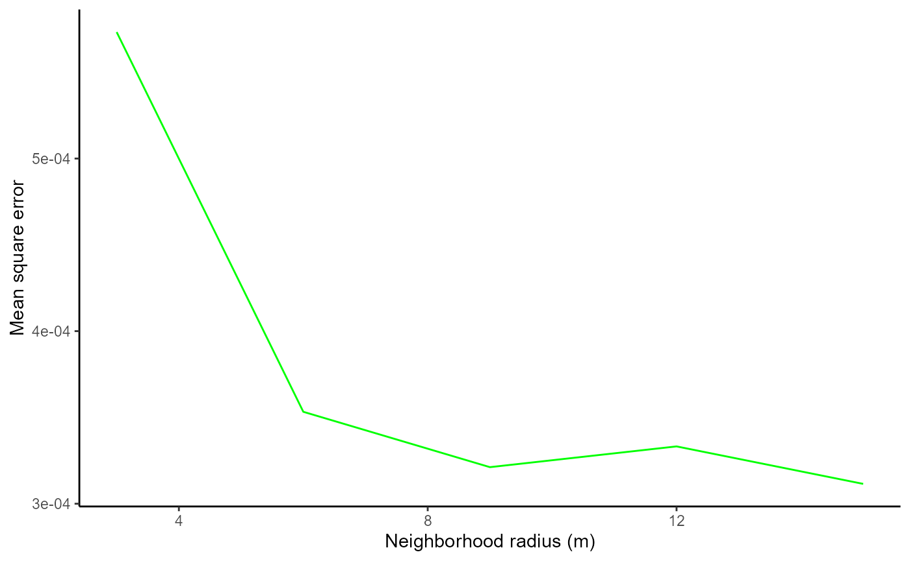
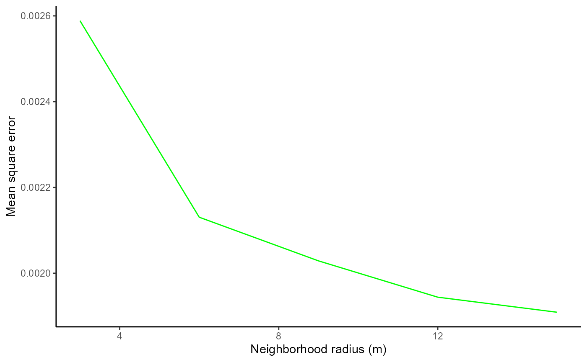

This vignette demonstrates how to select an appropriate neighborhood size for modeling tree growth or mortality. The appropriate neighborhood size differs between forest ecosystems, forest successional stages, and tree species, so it is strongly recommended that a sensitivity analysis be conducted for neighborhood size before drawing conclusions.
select_nbhd_size()
The select_nbhd_size() function fits tree growth or mortality models using a variety of neighborhood sizes to calculate the explanatory neighborhood metrics and quantifies the fit of each model to the training data. Comparing the fit of models based on different neighborhood sizes then permits an informed decision on the neighborhood size to be used in the final analysis.
This process involves the implementation of many forestexplorR functions and therefore select_nbhd_size() has many required arguments. First we must provide the neighborhood sizes to try (radii) and the tree species for which we want to try them (focal_sps; independent assessments of neighborhood size are made for each species). In addition, we must provide the tree location data required for identifying neighborhoods (map_data), indicate whether we are fitting a growth or mortality model (model_process), and provide the tree measurement dataset needed to calculate growth rates or provide mortality data (tree_data). We can also optionally provide any stand-level abiotic variables we want to include as covariates in the models (abiotic_data).
We also need to indicate what method neighborhood_summary() should use to calculate species-specific tree densities, the maximum x and y coordinates so that trees with neighborhoods overlapping the stand boundary can be identified (max_x and max_y), whether we want these edge trees to be excluded from analysis or have their neighborhood metrics corrected (edge_handling), and (optionally) the number of interactions a neighbor species must be involved in to be treated independently instead of included in the “RARE” group (rare_sps; defaults to 100 interactions if not provided).
The following code shows an example of applying select_nbhd_size() to growth models for the species “PSME” and “TSHE” in the built-in mapping data, trying neighborhood sizes of 3, 6, 9, 12, and 15 m in radius. Here, we do not apply edge handling, and therefore trees with neighborhoods overlapping the stand boundary are excluded from analysis.
size_compare <- select_nbhd_size(radii = seq(3, 15, 3), map_data = mapping,
model_process = "growth",
tree_data = tree,
abiotic_data = stand_abiotic,
focal_sps = c("PSME", "TSHE"),
dens_type = "proportional",
max_x = 100, max_y = 100)
#> [1] "Warning: 139 trees exhibited negative annual growth"
#> [1] "Warning: 139 trees exhibited negative annual growth"
#> [1] "Warning: 139 trees exhibited negative annual growth"
#> [1] "Warning: 139 trees exhibited negative annual growth"
#> [1] "Warning: 139 trees exhibited negative annual growth"The output of select_nbhd_size() is a list. The first element is a table of the mean square errors of the models based on different neighborhood sizes applied to each of the focal species:
size_compare$mse_vals
#> radius PSME_mse TSHE_mse
#> 1 3 0.0005965735 0.002588781
#> 2 6 0.0003472912 0.002130589
#> 3 9 0.0003230661 0.002028809
#> 4 12 0.0003323303 0.001944152
#> 5 15 0.0003093260 0.001909060The remaining elements are plots of mean square error vs. neighborhood size for each of the focal species:
size_compare$PSME_plot
size_compare$TSHE_plot
To select the most appropriate neighborhood size using these plots, we need to consider two competing priorities. First, we of course want our model to fit the training data well so we want to pick a neighborhood size that results in a low mean square error. However, we also want to include as many focal trees as we can because this gives us greater confidence that our findings will be applicable beyond the sampled stands.
As a larger neighborhood size results in lower mean square error but more focal trees excluded due to their neighborhood overlapping the stand boundary (if edge_handling = FALSE), this decision presents a trade-off. We therefore recommend choosing the neighborhood size that, based on visual observation, lies at the “elbow” of these plots. In the example shown here, we would select 6m as the neighborhood radius for both PSME and TSHE. We would therefore provide 6m as the neighborhood radius to the neighborhoods() function when preparing the data for our final model.